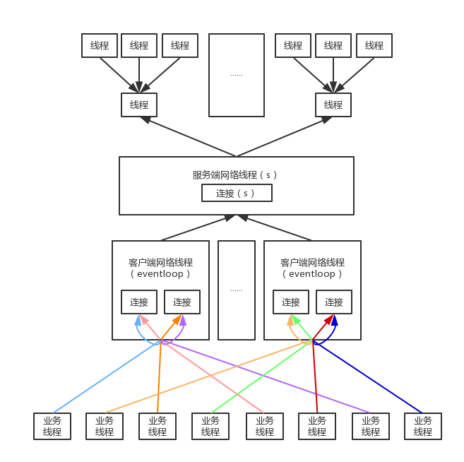

概念阐述
本小节主要介绍serviceComb微服务的完整线程模型，介绍IO线程和业务线程之间的关系
完整线程
servicecComb微服务的完整线程模型如下图所示：
- 业务线程在第一次调用时会绑定某一个网络线程,避免在不同网络线程之间切换,无谓地增加线程冲突的概率
- 业务线程绑定网络线程后,会再绑定该网络线程内部的某个连接,同样是为了避免线程冲突
- 客户端和服务器都可以配置多个网络线程(eventloop)，默认为CPU核数的两倍，每个网络线程可以配置多个连接，默认为1，支持Rest和Highway两种网络通道，具体配置请查看如下章节：
- 服务端可配置业务线程池executor，线程粒度可细化至schemaId:operation，配置如下：
在microservice.yaml中添加executors配置，为schemaId:operation配置单独的业务线程池：
servicecomb:
executors:
Provider:
[schemaId].[operation]